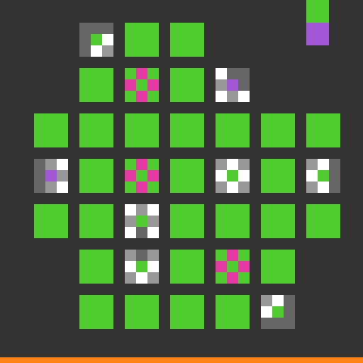
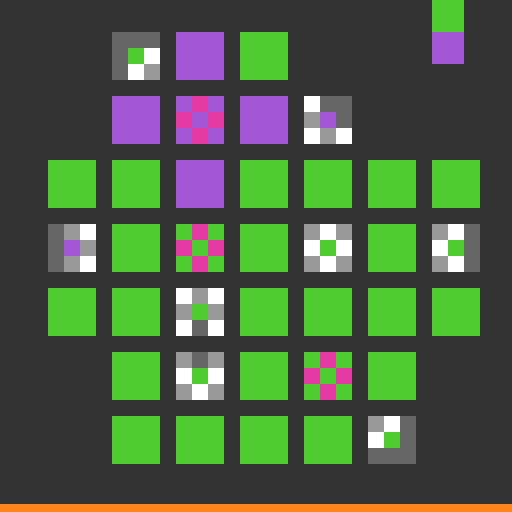
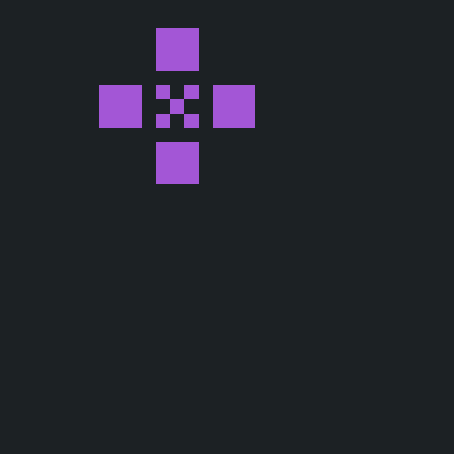
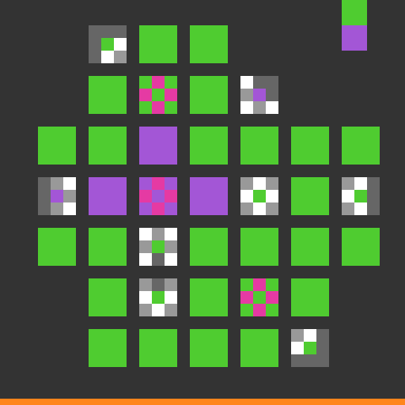
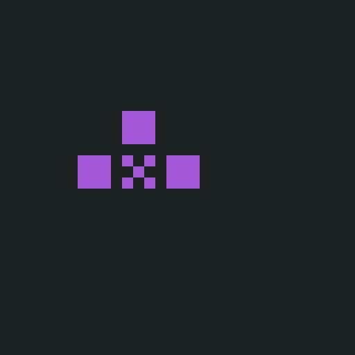
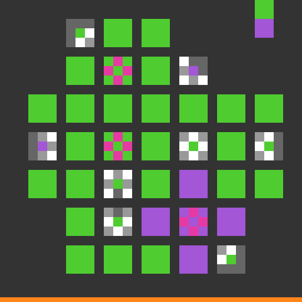
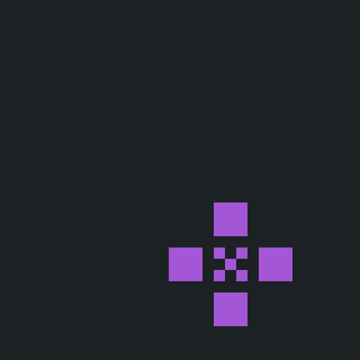

Shared start
Untouched level 5
All three arms reached this board through the same validated 69-action prefix.

Top operator
164 pixels changed
Logical cells toggled: (6, 24), (14, 16), (14, 32), (22, 24)
Level gain: 0 · Game over: no · Tokens: 0


Middle operator
128 pixels changed
Logical cells toggled: (22, 24), (30, 16), (30, 32)
Level gain: 0 · Game over: no · Tokens: 0


Bottom Right operator
164 pixels changed
Logical cells toggled: (38, 40), (46, 32), (46, 48), (54, 40)
Level gain: 0 · Game over: no · Tokens: 0


Next falsifiable gate
Seven-step Gray-code search
There are only eight combinations of three binary operators. This route visits every non-empty combination while changing one button at a time. Every observed board must match the XOR model.
- 1. click top state: top
- 2. click middle state: top + middle
- 3. click top state: middle
- 4. click bottom right state: middle + bottom_right
- 5. click top state: top + middle + bottom_right
- 6. click middle state: top + bottom_right
- 7. click top state: bottom_right